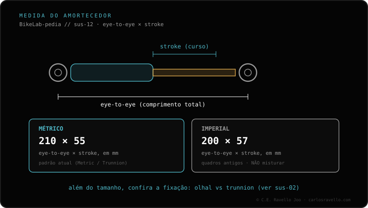

Não se opõem nem significam o mesmo. «Métrico» é um sistema de medidas (em milímetros) e «trunnion» é um tipo de fixação: um amortecedor trunnion também é métrico. A diferença real é como ele é preso em cima. No olhal padrão o amortecedor tem olhal com bucha (bushing) em ambas as pontas; no trunnion os parafusos rosqueiam direto no corpo superior, sem olhal em cima, o que reduz o eye-to-eye e deixa mais espaço para as buchas. Não são intercambiáveis sem o quadro certo. Antes de comprar, confira a medida exata que o seu quadro pede; se você chegou do cluster de suspensão e canote, essa é a primeira conferência.
A confusão habitual é tratar «métrico» e «trunnion» como duas opções do mesmo cardápio. Não são: uma é a medida, a outra é a fixação.
Métrico descreve como o amortecedor e o curso dele são medidos, em milímetros. É o sistema de medidas que define o comprimento (eye-to-eye) e o curso (stroke). Não diz nada sobre como ele se fixa.
Trunnion descreve como o amortecedor se fixa em cima. Por isso um amortecedor trunnion também é métrico: ele herda o sistema de medidas e acrescenta a forma de fixação. Dizer «métrico ou trunnion» mistura duas categorias.
Olhal padrão (standard eyelet). O amortecedor tem um olhal em cada ponta, e dentro de cada olhal vai uma bucha (bushing) por onde passa o parafuso. Em cima e embaixo, a fixação é a mesma.
Trunnion. Em cima não há olhal: os parafusos rosqueiam direto no corpo superior do amortecedor. Ao tirar o olhal de cima, o eye-to-eye diminui e sobra mais espaço para as buchas. Embaixo costuma manter o olhal com bucha, como o padrão.

O tipo de fixação é decidido pelo quadro, não por você. Para não errar na compra, primeiro tire a medida eye-to-eye e o stroke que o seu quadro pede, e de quebra confirme se a fixação é de olhal ou trunnion. Se você veio do cluster de suspensão e canote, essa é a primeira conferência antes de mexer em qualquer outra coisa.
Mande o modelo do seu quadro e a medida do seu amortecedor e dizemos se é olhal padrão ou trunnion. Fale com a gente no WhatsApp
Não, nem se opõem. Métrico é o sistema de medidas em mm; trunnion é um tipo de fixação. Um trunnion também é métrico.
O padrão tem olhal com bucha em ambas as pontas; o trunnion rosqueia os parafusos direto no corpo superior, sem olhal em cima. Isso reduz o eye-to-eye.
Não sem o quadro certo. A fixação é definida pelo quadro, não pelo amortecedor.
© 2026 BikeLab Studio. Conteúdo sob CC BY 4.0: você pode copiar, traduzir e publicar, inclusive com fins comerciais. A citação é obrigatória. Sem atribuição, a licença é revogada automaticamente (CC BY 4.0, §6.a) e o uso passa a ser violação de direitos autorais: solicitamos a retirada do conteúdo e sua desindexação. · Design e propriedade: Carlos Ravello Joo